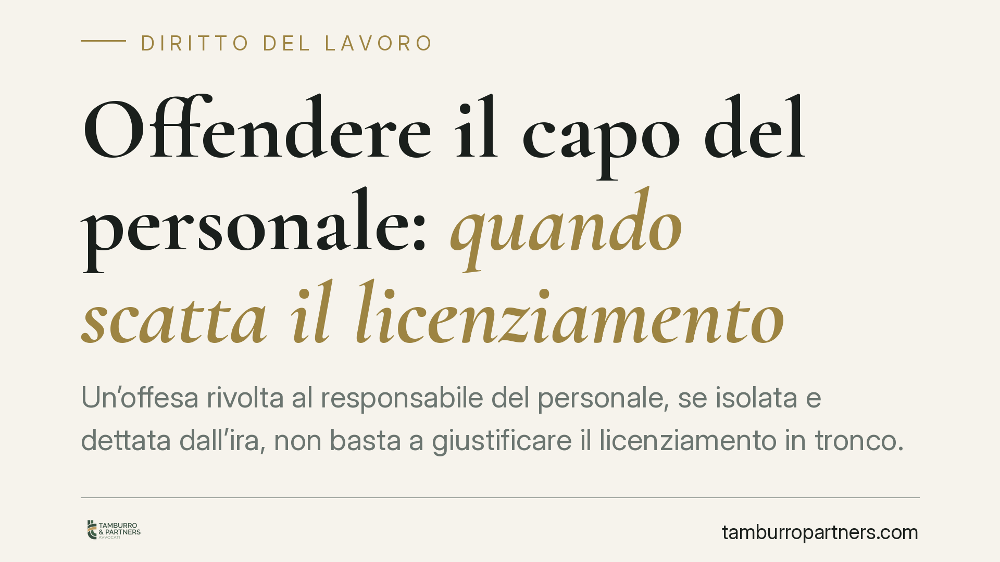

Offendere il capo del personale: quando scatta il licenziamento
Un'offesa rivolta al responsabile del personale, se isolata e dettata dall'ira, non basta a giustificare il licenziamento in tronco. Una recente ordinanza della Cassazione ha ribadito che, senza minaccia e senza recidiva, manca la giusta causa: il rapporto si risolve, ma al lavoratore spetta un'indennità economica. Una distinzione che pesa su datori e dipendenti.

Il caso
Un dipendente rivolge un'offesa al responsabile delle risorse umane. Il datore procede al licenziamento per giusta causa, cioè al licenziamento immediato senza preavviso. Il lavoratore impugna. La Corte di Cassazione, con una recente ordinanza, ha stabilito che l'offesa isolata, priva di contenuto minatorio e dettata da un momento di ira, non raggiunge la gravità richiesta per la giusta causa. Il rapporto si risolve comunque, ma al lavoratore viene riconosciuta un'indennità economica (nel caso deciso, pari a dodici mensilità).
Inquadramento normativo
Il punto di partenza è l'art. 2119 del Codice civile. La giusta causa è quella condotta che rende impossibile la prosecuzione, anche provvisoria, del rapporto di lavoro: è la soglia più alta, quella che consente il licenziamento senza preavviso.
Diverso è il giustificato motivo soggettivo, disciplinato dalla L. 604/1966, che presuppone un notevole inadempimento degli obblighi contrattuali ma non l'irreparabilità immediata del rapporto. La distinzione non è formale: incide sulla legittimità del recesso e sulle conseguenze economiche.
La Cassazione valorizza il principio di proporzionalità: l'offesa isolata, senza minaccia e senza precedenti disciplinari, può integrare al più un giustificato motivo, ma non la giusta causa. Sul piano dell'iter, resta fermo l'obbligo del procedimento disciplinare previsto dall'art. 7 dello Statuto dei lavoratori (L. 300/1970): contestazione scritta dell'addebito, termine a difesa, valutazione delle giustificazioni.
Il regime a tutele crescenti
Per i lavoratori assunti dal 7 marzo 2015 opera il D.lgs. 23/2015. L'art. 3 prevede che, quando il licenziamento è dichiarato illegittimo ma non ricorrono i casi di reintegra, il giudice riconosca un'indennità economica commisurata all'anzianità di servizio, entro un minimo e un massimo di legge. È il modello a tutele crescenti: non si torna al posto di lavoro, ma si ottiene un ristoro monetario.
È questa la ragione per cui, nel caso esaminato, il rapporto si è risolto ugualmente pur in assenza di giusta causa: la sanzione per il datore non è stata la reintegrazione, ma il pagamento di dodici mensilità.
Implicazioni pratiche
Per il datore di lavoro, la lezione è chiara: qualificare come giusta causa ogni offesa espone al rischio di soccombenza. La qualificazione del fatto va calibrata sulla gravità concreta, sulla presenza o meno di minacce, sulla recidiva e sul contesto in cui la condotta è maturata.
Per il lavoratore, un'offesa non minatoria e isolata non lo priva necessariamente delle tutele economiche: l'impugnazione può portare al riconoscimento dell'indennità anche quando il rapporto non viene ripristinato.
Per entrambi, il rispetto rigoroso del procedimento disciplinare ex art. 7 St. lav. resta decisivo: un vizio formale può travolgere anche un licenziamento sostanzialmente fondato.
Cosa fare in concreto
Per il datore di lavoro:
- Verificare la reale gravità del comportamento prima di scegliere tra giusta causa e giustificato motivo, valutando minaccia, recidiva e contesto.
- Rispettare integralmente l'iter disciplinare dell'art. 7 St. lav.: contestazione scritta, termine a difesa, decisione motivata.
Per il lavoratore:
- Impugnare il licenziamento entro 60 giorni dalla ricezione con atto scritto (impugnazione stragiudiziale).
- Attivarsi entro gli ulteriori 180 giorni per il deposito del ricorso giudiziale o per la richiesta di conciliazione/arbitrato (art. 6 L. 604/1966): il decorso di questo termine rende inefficace l'impugnazione.
- È opportuno documentare per iscritto fatti, circostanze e testimoni tempestivamente, prima che il ricordo si affievolisca.
Disclaimer
Contributo informativo a cura di Tamburro & Partners Avvocati - Avv. Giuseppe Tamburro. Non costituisce parere legale.
Ogni storia di lavoro ha i suoi tempi.
Se gestisci HR e vuoi un confronto su contenzioso, ispezioni o licenziamenti, scrivi allo studio. Ti rispondiamo entro un giorno lavorativo.